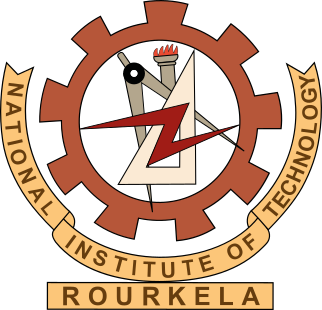

Education
The Pennsylvania State University
Ph.D. in Computer Science and Engineering
Aug 2018 – Aug 2025 (Expected) | University Park, PA
Advisors: Dr. Mahmut Taylan Kandemir,
Dr. Jack Sampson
GPA: 3.7/4.00
National Institute of Technology, Rourkela
B.Tech + M.Tech Dual Degree in Electronics and Communication Engineering
Aug 2011 – May 2016 | Rourkela, Odisha, India
Advisors: Dr. Sarat Kumar Patra,
Tarjinder Singh (Intel)
CGPA: 8.39/10.00 (Honors)

Social & Media
Instagram Feed
Connect with Me